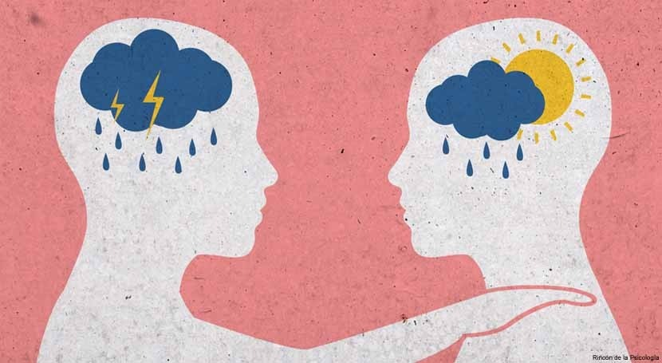

| Soy una persona que siempre trata de ser feliz e intento contagiar a los demas siendo amable | |
| Cuando las circunstancias lo ameritan me se ajustar a las situaciones que se presentan | |
| Me gusta aceptar mis errores y en base en ello suelo mejorar para no volver a errar | |
|  | Tiendo a ser muy perceptible cuando las personas tienen distinto tipo de humor y me contagio de su sentir |
 |
Suelo desarrollarme bien cuando se trata de trabajar en equipo aportando todo lo disponible a mis manos |